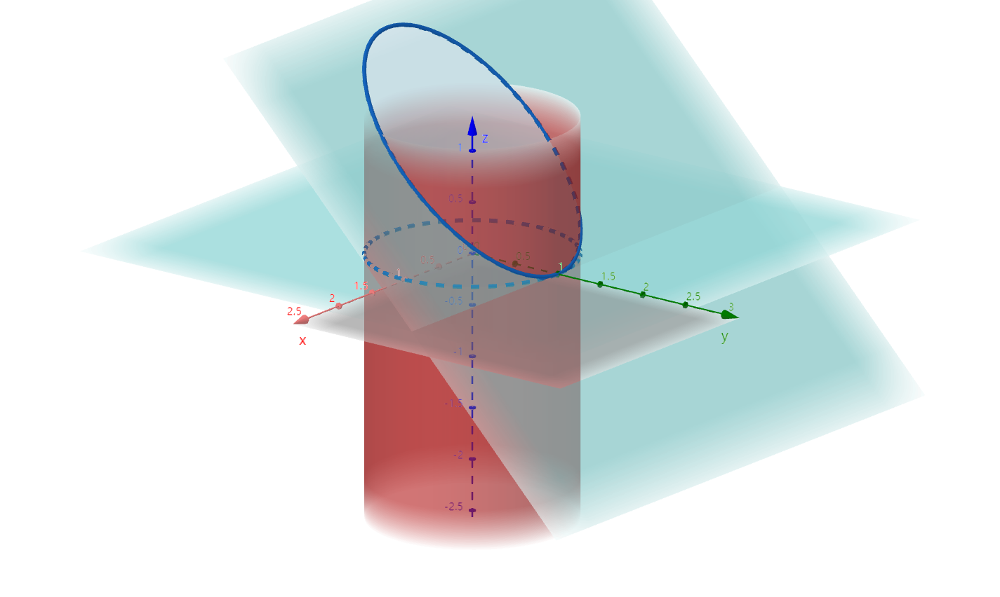

§10.6 高斯公式
第 II 类曲面积分 → 三重积分
定理
- Ω 单连通
- Σ 封闭
- P、Q、R一阶偏导连续
则 ∮ΣPdydz+Qdzdx+Rdxdy=±∭Ω(∂x∂P+∂y∂Q+∂z∂R)dv（外+内-）
推广
- Ω 复联通
- Σ外：方向指向外侧；Σ内：方向指向内侧
- P、Q、R偏导连续
则 ∮Σ内+Σ外Pdydz+Qdzdx+Rdxdy=∭Ω(∂x∂P+∂y∂Q+∂z∂R)dv
- Σ⊥xOy⇒∬ΣRdxdy=0
- Σ⊥yOz⇒∬ΣPdydz=0
- Σ⊥zOx⇒∬ΣQdzdx=0
例题
-
I=∬Σxdydz+ydzdx+zdxdy
-
Σ:x2+y2=1,z=0,z=3 所围外侧
解：I=∬Ω(1+1+1)dv=3∭Ωdv=3×π×12×3=9π
-
Σ:x2+y2=1 被 z=0 和 z=3 所截外侧
解：添加 Σ上:z=e,0≤x2+y2≤1 上侧，Σ下:z=0,0≤x2+y2≤1 下侧
Σ′=Σ上+Σ下+Σ，IΣ′=9π
IΣ1=∬Σ1zdxdy=3∬Σ1dxdy=3∬Dxydxdy=3π
IΣ2=∬Σ2zdxdy=0
I=9π−3π=6π
-
I=∬Σ(2z2+xy)dydz+(x2−yz)dxdy，Σ:x2+y2=1 被 z=0 和 y+z=1 所截

解：添加 Σ上:y+z=1 上侧，Σ下:z=0
Σ′=Σ+Σ上+Σ下
IΣ′=∭Ω[y+(−y)]dv=0
IΣ上(=+∬Dxy(P⋅0+Q⋅1+R⋅1)dxdy=∬Dxy[x2−y(1−y)]dxdy=∬Dxy(x2+y2−y)dxdy=∬Dxy(x2+y2)dxdy+0=(∫02πdθ)(∫01ρ2⋅ρdρ)=2πDxy:x2+y2≤1)
IΣ下=∬Σ下(x2−yz)dxdy=∬Σ下x2dxdy=−∬Dxyx2dxdy=−4π
I=0−2π−(−4π)=−4π
-
计算 I=∬Σylnrdydz−xlnrdzdx+zdxdy，r=x2+y2+z2，Σ:a2x2+b2y2+c2z2=1(a,b,c>0) 外侧
解：添加 Σ内:x2+y2+z2=ϵ2（ϵ 足够小）内侧
∬Σ+Σ内ylnrdydz−xlnrdzdx+zdxdy=∭Ω(∂x∂P+∂y∂Q+∂z∂R)dv=∭Ω[y⋅r1⋅rx+(−x)⋅r1⋅ry+1]dxdydz=∭Ωdxdydz=34πabc−34πϵ3
IΣ内=∬Σ内ylnϵdydz−xlnϵdzdx+zdxdy=−∭Ω(0+0+1)dxdydz=−34πϵ3
∴I=34πabc
散度（标量）A=(P,Q,R)，divA=∂x∂P+∂y∂Q+∂z∂R
如 u=x2+yz+z2，求 div(gradu)
解：
gradu=(2x,2y,2z)，原式 =2+2+2=6